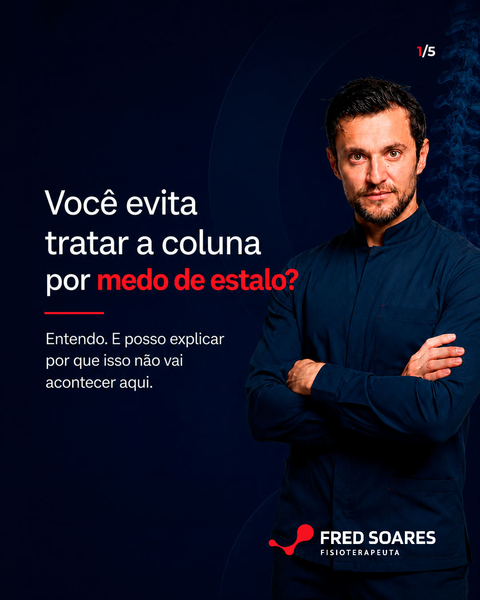

fixado

Osteopata · Especialista em coluna
Intermares, Cabedelo
Apresentação por Arrive In Digital





.png)


Grade 3×3 · 10 publicações em ordem de postagem. Clique em qualquer imagem para ampliar.
Uma única promessa, repetida de ângulos diferentes:
Promessa central
"trata a causa, não o sintoma."
Filtre por formato. Clique em "Ver brief" para ver frase, legenda e instruções de design.
Carrossel · Fixado
5 slides
Carrossel · Fixado
6 slides
Card| Tempo | Bloco | Fala |
|---|---|---|
| 0–3s | Gancho | Você sabe o que acontece na primeira consulta comigo? Não é o que a maioria espera. |
| 3–32s | Processo | A primeira coisa que faço é te ouvir. De verdade. Quero entender como é o seu dia a dia, o que você faz, como você dorme, o que mudou quando a dor apareceu. |
| 32–55s | Avaliação | Depois vem a avaliação completa — postura, mobilidade, tensão muscular. E na maioria dos casos, a gente já inicia o tratamento na mesma consulta. |
| 55–62s | CTA | Se você quer entender a causa da sua dor — manda uma mensagem. Estou em Intermares. |
CardCard| Tempo | Bloco | Fala |
|---|---|---|
| 0–4s | Gancho | Se alguém já te disse que sua dor na coluna é da idade e você vai ter que conviver — eu preciso te contar uma coisa. |
| 4–38s | Reframe | Desgaste na coluna e dor na coluna são coisas diferentes. A maioria dos meus pacientes acima dos 60 tem tensão muscular acumulada, rigidez articular, compensações. Isso não é irreversível. Tem tratamento. |
| 38–70s | Prova + CTA | Já atendi pacientes com mais de 70 anos que não conseguiam subir uma escada sem dor. Em poucas sessões — com técnica suave, sem estalos — voltaram à rotina. Me chama. Estou em Intermares. |
Carrossel6 slidesCardDr. Fred Soares · Osteopata especialista em coluna · Intermares, Cabedelo
Calendário editorial produzido por Arrive In Digital
Osteopata · Especialista em coluna
Intermares, Cabedelo
Apresentação por Arrive In Digital


Grade com os 8 posts de julho. C4 e C8 já com arte final — clique para ampliar.
Mesma promessa central, ângulos novos — casos virais reforçam os três pilares:
Promessa central
"trata a causa, não o sintoma."
Filtre por formato. Clique em "Ver brief" para ver copy, legenda e instruções de gravação.
Card
| Tempo | Bloco | Fala |
|---|---|---|
| 0–4s | Gancho | Na Copa do Mundo, o Paquetá lesionou o posterior de coxa. De novo. Mesmo músculo — segunda vez em menos de um ano. E o que fez isso acontecer é o mesmo erro que faz a SUA dor voltar sempre. |
| 4–14s | Validação | O posterior cicatrizou. O exame ficou normal. Ele voltou a treinar. Parecia resolvido. Mas lesão que volta no mesmo lugar quase sempre indica que a causa não foi tratada — só o sintoma. |
| 14–28s | Reframe | O posterior de coxa trabalha junto com a lombar, o ilíaco e o glúteo. Quando há restrição em qualquer ponto dessa cadeia, o posterior compensa — e fica sobrecarregado. Tratar só o músculo sem avaliar a cadeia é tratar o resultado, não a causa. |
| 28–45s | Prova | Isso vale pra atleta de elite e vale pra quem sente aquele incômodo no fundo da coxa que não fecha. Dor que volta no mesmo lugar não é azar. É sinal de que a origem ainda está lá. |
| 45–58s | CTA | Se você tem uma dor que melhora e volta — sempre no mesmo lugar — o próximo passo não é esperar melhorar de vez. É entender de onde ela vem. Estou em Intermares. Manda mensagem. |
Card
Carrossel
5 slides
| # | Slide | Copy |
|---|---|---|
| 1 | Capa | 2 horas de reunião. Mouse o dia inteiro. E dói o ombro. Você culpou o mouse. O problema pode ser outro. |
| 2 | A cadeia | O ombro depende de uma cadeia: Coluna cervical → Coluna torácica → Escápula → Postura geral. Uma restrição em qualquer ponto pode aparecer como dor no ombro. |
| 3 | O que você sente | Dor ao levantar o braço. Desconforto após horas no computador. Limitação no supino ou desenvolvimento. Sensação de travamento. |
| 4 | O erro | Trocar o mouse. Colocar suporte ergonômico. Parar o exercício que dói. Se a restrição está em outro ponto da cadeia, a dor volta. |
| 5 | Avaliação | Como o ombro se move em relação à cervical e à escápula. Onde está a restrição real. O que o corpo está compensando. |
| 6 | CTA | Dr. Fred Soares · Osteopata especialista em coluna · Instituto de Madrid + Mestrado USP · +20 anos · +10.000 pacientes · 📍 Intermares, Cabedelo |
Card
| Tempo | Bloco | Fala |
|---|---|---|
| 0–4s | Gancho | Um vídeo viralizou essa semana. Um jovem estava arrancando raízes do chão — movimento simples, do dia a dia. A coluna travou em 90 graus. Ficou meses assim. Não conseguia andar. Não conseguia entrar em lojas. |
| 4–18s | Contexto | O que chamou atenção não foi só a imagem. Foi quando ele disse: "meu pai esperou muito tempo e me passou isso." Hereditariedade não é destino — mas quando você ignora a causa, o corpo aprende a compensar. |
| 18–35s | Clínico | Clinicamente: disfunção sacroilíaca com comprometimento cervical. Flexão forçada com torção — exatamente o que acontece quando você puxa algo pesado do chão — sobrecarrega a sacroilíaca. Quanto mais tempo passa, mais difícil reverter. |
| 35–50s | Diferencial | No vídeo, o tratamento foi quiropraxia. No meu consultório, técnica manual suave, sem estalar nada. O princípio é o mesmo: encontrar a restrição real e tratar a causa. Em 10 minutos daquele vídeo, o cara estava andando calcanhar-ponta pela primeira vez em meses. |
| 50–60s | CTA | Você não precisa chegar nos 90 graus para buscar ajuda. Se você já acorda travado, evita certos movimentos ou sua família percebeu que você se move diferente — esse é o momento. Me chama. Estou em Intermares. |
Carrossel
6 slides
| # | Slide | Copy |
|---|---|---|
| 1 | Capa | Você quer treinar sem medo de travar de novo. Você quer trabalhar o dia inteiro sem o corpo cobrar às 16h. Isso tem caminho. Exige progressão — não pressa. |
| 2 | O medo | Depois de uma crise de dor, o medo de piorar é real. Você hesita no agachamento. Evita o movimento que causou a dor. Ou senta diferente — e espera que passe. Esse medo é legítimo. E existe um caminho para sair dele. |
| 3 | O erro | Voltar rápido demais, sem progressão, é o caminho mais curto para uma nova crise. O tecido precisa de tempo. A musculatura precisa reconquistar estabilidade. A pressa custa semanas a mais. |
| 4 | Progressão | → Começar pelo que o corpo consegue, sem dor · → Aumentar carga e amplitude gradualmente · → No treino: retornar com controle · → No trabalho: reduzir o tempo parado · → Observar os sinais em cada etapa |
| 5 | O objetivo | Não é só sair da dor. É agachar sem monitorar cada rep. Trabalhar o dia inteiro sem o corpo cobrar às 16h. Treinar, se mover, viver — sem medo de recaída. |
| 6 | CTA | Dr. Fred Soares · Osteopata especialista em coluna · Instituto de Madrid + Mestrado USP · +20 anos · +10.000 pacientes · 📍 Intermares, Cabedelo · Agenda uma avaliação. Em média 4–5 sessões. Resolvido. |
Dr. Fred Soares · Osteopata especialista em coluna · Intermares, Cabedelo
Calendário editorial produzido por Arrive In Digital